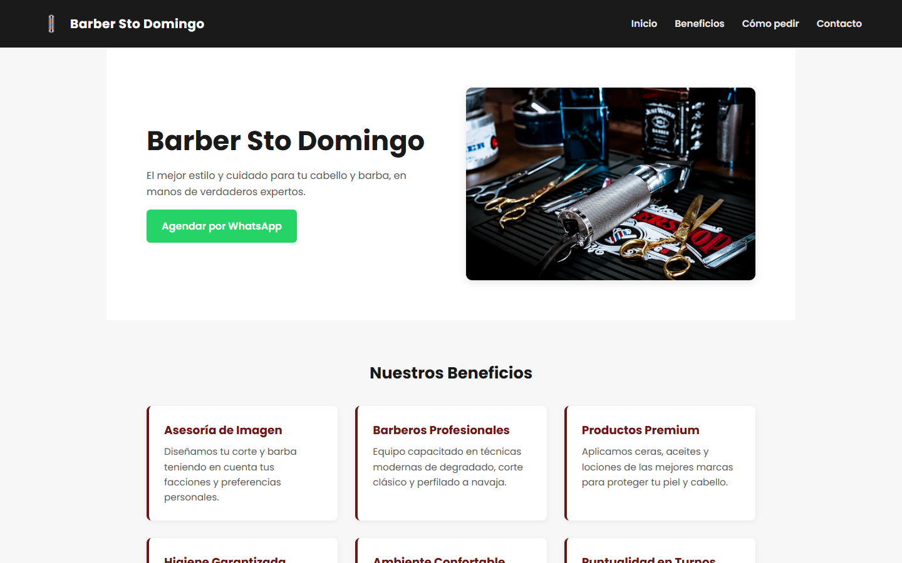
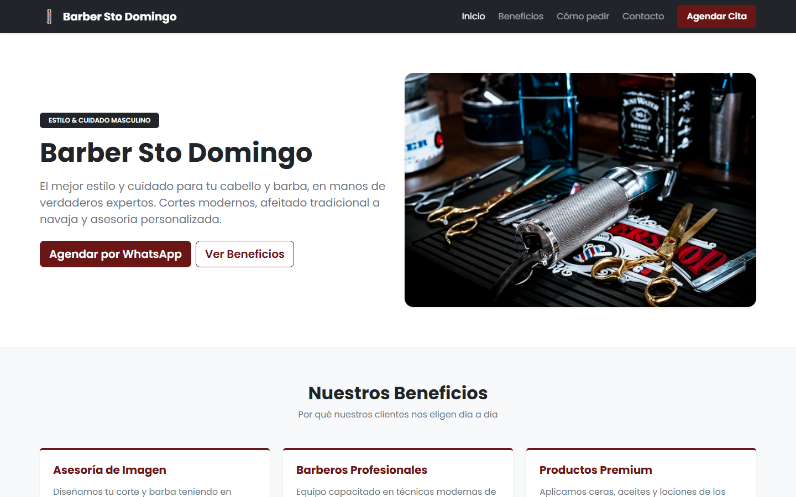

Capturas en modo incógnito (Lighthouse)
Capturas de pantalla tomadas sobre los despliegues reales en GitHub Pages ejecutando Lighthouse en modo incógnito, sin extensiones, para medir rendimiento, accesibilidad, buenas prácticas y SEO.
Sesión 08 · CSS Puro
HTML semántico + media queries propias
Sesión 13 · Bootstrap 5
Grid 12 col + variables de marca CSS
Tabla Comparativa
Comparación por 6 criterios técnicos y de experiencia de desarrollo.
| Criterio | Sesión 08 (CSS Puro) | Sesión 13 (Bootstrap 5) | Resultado |
|---|---|---|---|
| 1. Rendimiento (Lighthouse) |
99/100
Sin librerías externas, el navegador descarga solo CSS propio (~12 KB). FCP en 0.8 s. |
94/100
Descarga Bootstrap CSS (~25 KB) + bundle JS (~80 KB) desde CDN. FCP en 1.1 s. |
Sesión 08 ✓ |
| 2. Líneas de CSS escritas |
300 líneas
Resets manuales, flexbox, cuadrícula CSS Grid, 2 bloques de media queries y todos los estados hover. |
58 líneas (-81%)
Solo variables de marca ( |
Bootstrap ✓ |
| 3. Tiempo que tomó |
~3 a 4 horas
Calcular márgenes, depurar alineaciones y redactar media queries tomó la mayor parte del tiempo. |
~45 minutos
Las clases utilitarias ( |
Bootstrap ✓ |
| 4. Facilidad para hacerla responsive |
Media
Se necesitaron dos bloques |
Muy fácil
|
Bootstrap ✓ |
| 5. Qué tan única se ve |
100% original
Cada borde, tipografía y espacio es una decisión de diseño propia. No se parece a ningún framework. |
Estándar Bootstrap
El acabado es limpio y profesional, pero reconocible. Para diferenciarse se requiere personalización adicional. |
Sesión 08 ✓ |
| 6. Formulario con validación |
Ausente
La versión original solo tiene un botón de enlace a WhatsApp. No hay formulario ni validación de datos. |
Completo y accesible
|
Bootstrap ✓ |
Conclusión: ¿Bootstrap o kit propio en el proyecto final?
Decisión técnica y justificación para el proyecto formativo ADSO.
Usaremos Bootstrap 5 + variables de marca propias
La decisión no es usar Bootstrap en lugar de CSS; es usarlo como cimientos para escribir menos CSS repetitivo y dedicar más tiempo a la identidad visual del proyecto.
⚡ Velocidad de entrega
En ADSO los proyectos tienen tiempos cortos. Bootstrap redujo el CSS necesario en un 81% (de 300 a 58 líneas), lo que libera horas para funcionalidades y lógica de negocio.
👥 Trabajo colaborativo
La nomenclatura de Bootstrap (container, row, col-md-6) es un estándar conocido. Cualquier compañero entiende la estructura sin leer la documentación de un kit personalizado.
♿ Accesibilidad incluida
Los componentes de Bootstrap incorporan atributos ARIA y foco visible probados en múltiples navegadores y lectores de pantalla, cumpliendo estándares WCAG sin esfuerzo extra.
🎨 Identidad visual propia
Mediante --bs-btn-bg, --bs-btn-hover-bg y clases como .text-marca, se elimina el azul por defecto y se aplican los colores del proyecto sin escribir CSS extra de maquetado.